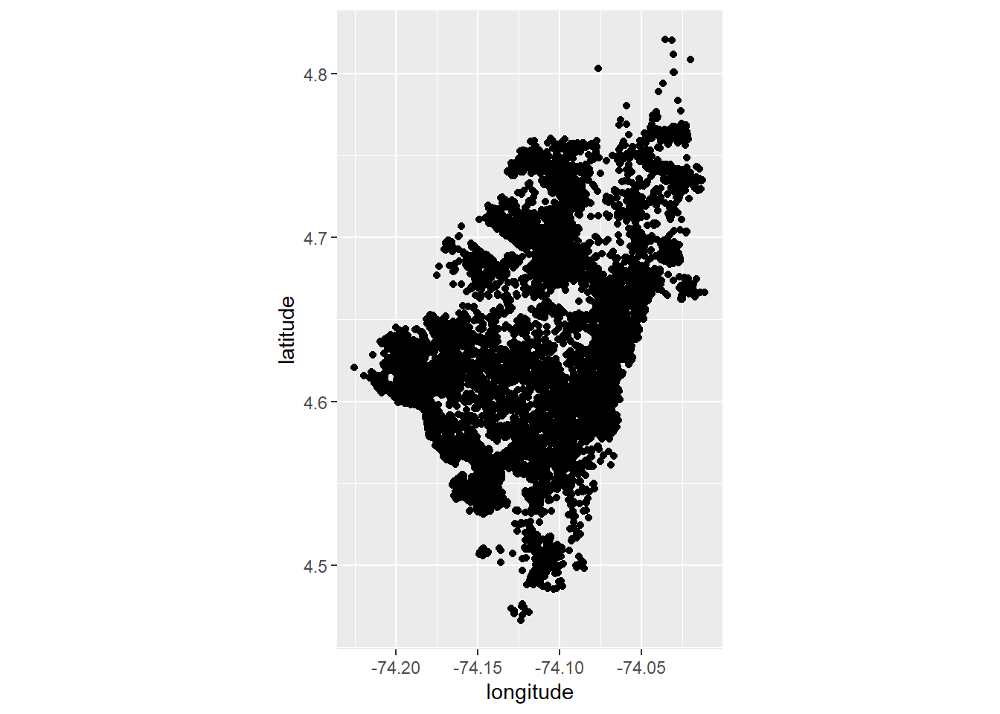
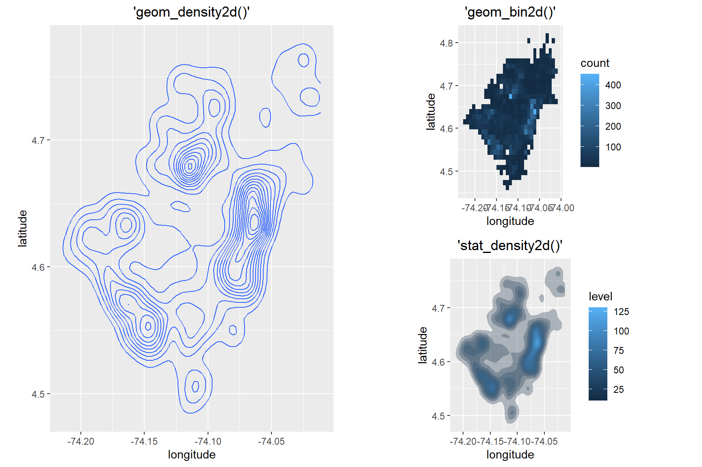

Chapter xx4 Nociones básicas de vizualización
Hay varias maneras de vizualizar la infromación espacial en R. Sin embargo, partiremos de la manerá mas “rápida” y esta es a través de la utilización de ggplot.
4.1 Vizualizar lo más elemental: una base de datos con coordenadas
Cuando tenemos una base de puntos, podemos vizualizarla con ggplot2, pero esta vizualización no tiene referencias como un “mapa base”. Con el comando coord_equal() podemos hacer que los vertices de las coordeandas sean siempre proporcionales entre sí:
a01_homicidios %>% ggplot(aes(longitude, latitude))+
geom_point()+coord_equal()
A pesar de que parece un mecanismo simple hay incluso otros comandos dentro de ggplot2 muy útiles de para vizualizar incuso densidades como geom_bin2d() y geom_density2d()
ggpubr::ggarrange(
# Lineas de nivlel de densidad
a01_homicidios %>% ggplot(aes(longitude, latitude))+
geom_density2d()+coord_equal()+labs(title = "'geom_density2d()'")+
theme(plot.title = element_text(hjust = 0.5)),
ggpubr::ggarrange(
# Densidades simples
a01_homicidios %>% ggplot(aes(longitude, latitude))+
geom_bin2d()+coord_equal()+labs(title = "'geom_bin2d()'")+
theme(plot.title = element_text(hjust = 0.5)),
# Densidades lineales
a01_homicidios %>% ggplot(aes(longitude, latitude))+
stat_density2d(aes(fill = ..level..),
geom = "polygon", alpha = 0.3)+coord_equal()+
labs(title = "'stat_density2d()'")+
theme(plot.title = element_text(hjust = 0.5)),
nrow = 2),
nrow = 1)
4.2 EXTRA: Agregando un mapa base con ‘ggmap()’
Auqnue es posible realizar mapas simplemente modificando algunas carácteristicas con ggplot2 de base, hay una libreria ggmap() es una libreria que nos puede ayudar a importar mapas base. Esto no es por lo general necesario, pero en algunos casos puede ser útil para que los lectores del mapa se guien más, o para dalre un acabado más estético a los mapas.
LO NO TAN CHEVRE:
Lo no tan chevre, es que para el uso de esta libreria hay que habilitar el API de Goole Maps. Los pasos para hbailitar el API son sencillos, pero es necesario registrar una tarjeta de crédito en GCP (Google Cloud Platafform) para que la aplicación no otorgue un API Key. No obstane, a pesar de que tenemos que registrar una tarjéta de crédito, dado el bajo consumo que (por lo general) nuestros análisis requiran, no generará cobros. Mas información de esto peude verse con el comando help("register_google") .
Para agregar una base a estos mapas simples creados desde ggplot, usaremos la libreria ggmap() .
library(ggmap)
# bogota_mapa_a <- get_map(c("lon" = -74.10936, "lat" = 4.628712), zoom = 11,
# source = "stamen", maptype = "watercolor")
# bogota_mapa_b <- get_map(c("lon" = -74.10936, "lat" = 4.628712), zoom = 11,
# source = "cloudmade", maptype = 53428)
#
#
#
#
# ggpubr::ggarrange(
# ggmap(bogota_mapa_a,
# base_layer = a01_homicidios %>%
# filter(year == 2019) %>%
# ggplot(aes(longitude, latitude)))+
# geom_density2d(color = "red", alpha = 0.7)+
# labs(title = "Densidad de homicidios Bogotá-2019",
# subtitle = "stamen:watercolor",
# caption = "Fuente: Policia Metropolitana de Bogotá")+
# theme(text = element_text(family = "serif"),
# plot.title = element_text(hjust = 0.5),
# plot.subtitle = element_text(hjust = 0.5),
# axis.text = element_blank(),
# axis.title = element_blank()),
#
# ggmap(bogota_mapa_b,
# base_layer = a01_homicidios %>%
# filter(year == 2019) %>%
# ggplot(aes(longitude, latitude)))+
# geom_density2d(color = "red", alpha = 0.7)+
# labs(title = "Densidad de homicidios Bogotá-2019",
# subtitle = "stamen:toner",
# caption = "Fuente: Policia Metropolitana de Bogotá")+
# theme(text = element_text(family = "serif"),
# plot.title = element_text(hjust = 0.5),
# plot.subtitle = element_text(hjust = 0.5),
# axis.text = element_blank(),
# axis.title = element_blank()),
# nrow = 1)Al igual que casi todo el resto de recursos de R, hay varias cheat-cheats y guías en el internet que pocemos consultar para recordar un poco mejor que parámetros podemos emplear en source y maptype.